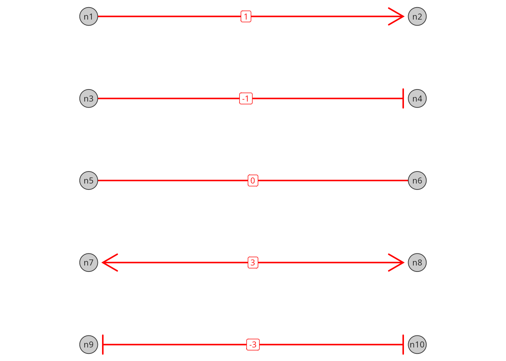
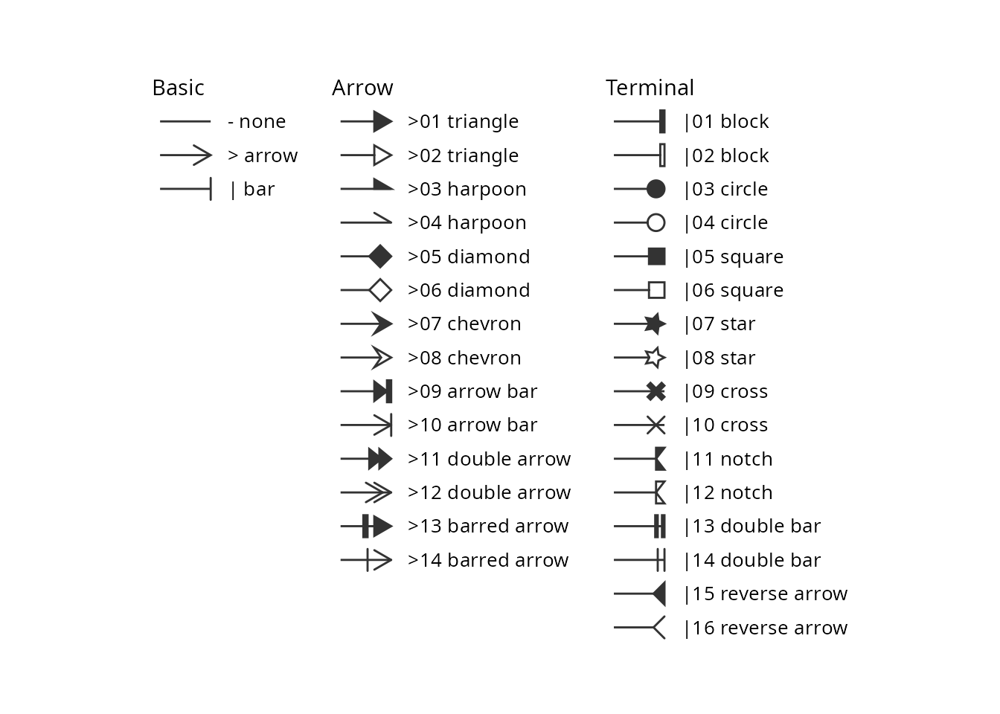
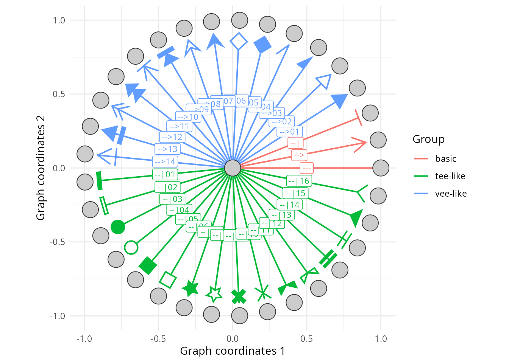
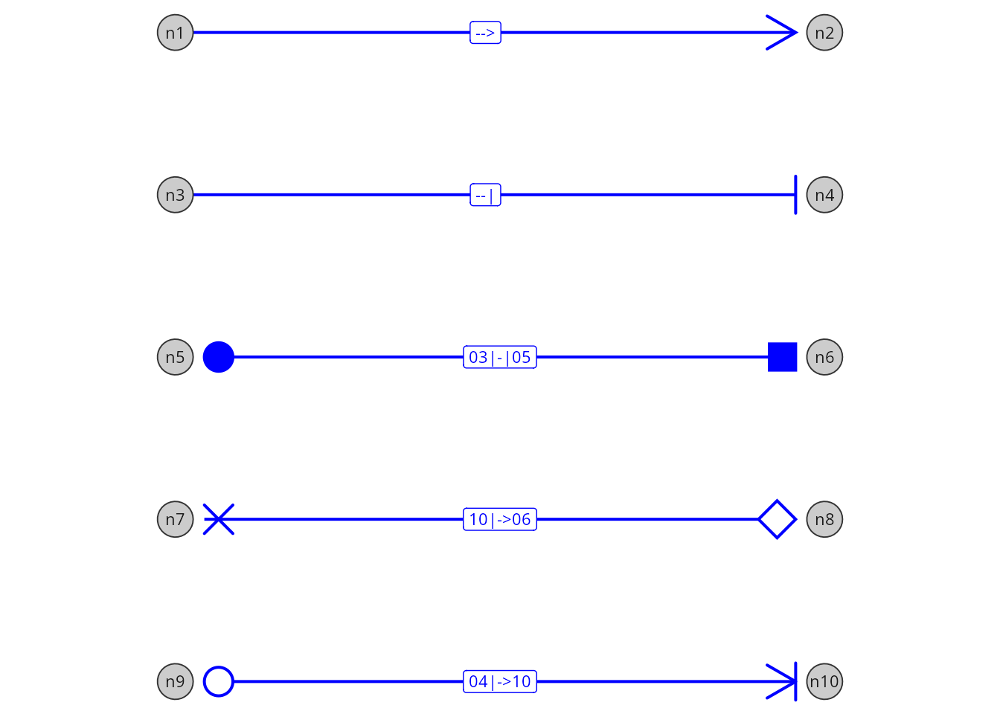

Edge glyphs: Drawing symbols at edge ends
Sysbiolab Team
2026-10-08
Source:vignettes/articles/edge-glyphs.Rmd
edge-glyphs.RmdPackage: RGraphSpace 1.5.7
# Check required version
if (packageVersion("RGraphSpace") < "1.5.7"){
message("Need to update 'RGraphSpace' for this vignette")
remotes::install_github("sysbiolab/RGraphSpace")
}Overview
Edge glyphs are the symbols drawn at the ends of an edge: arrowheads,
bars, and other shapes. In RGraphSpace, each edge carries an
arrowType code that names one glyph for its source end and
one for its target end, and geom_edgespace() draws them
wherever the edge meets a node.
#--- Load packages
library("RGraphSpace")
library("igraph")
library("ggplot2")
library("patchwork")Three levels of glyph codes
Glyphs can be set at three levels, from the simplest to the most expressive:
-
Integer codes, such as
1(arrow) or-1(bar), for common edge forms; -
Basic token codes, such as
"-->"or"--|", which provide a visual representation of the edge; -
Extended token codes, such as
"01<->01", which add modifiers (two-digit numbers) to select specific glyphs from the package’s collection.
Start with integer codes, use basic token codes when you want to see the edge form in the code, and add modifiers when you need the extended vocabulary.
Set up a graph for demonstration
Here we use an undirected bipartite graph, where glyphs can be placed
at either end of an edge. The arrowType attribute can be
set on the igraph object before constructing the
GraphSpace, or modified afterwards using
gs_edge_attr().
# Create a toy undirected bipartite graph with 10 nodes and 5 edges
g_bip <- make_bipartite_graph(1:10 %% 2, 1:10)
# Make a GraphSpace with a bipartite layout, rotated so that the
# bipartite connections run from left to right
gs_bip <- GraphSpace(g_bip, layout = layout_as_bipartite(g_bip))
#> Validating the 'igraph' object...
#> Vertex attribute 'name' missing; assigning names...
#> Creating a 'GraphSpace' object...
gs_bip <- rotateGraphSpace(gs_bip)
#> Rotating raw coordinates 90 degrees clockwise...
# Undirected graphs default to "---" (no glyphs)
gs_edge_attr(gs_bip, "arrowType")
#> [1] "---" "---" "---" "---" "---"Integer codes
Integer codes are the simplest way to set the common edge forms, built from arrows and bars:
-
0, no glyphs; -
1, arrow at the end, and-1, bar at the end; -
2, arrow at the start, and-2, bar at the start; -
3, arrows at both ends, and-3, bars at both ends; -
4, bar at the start and arrow at the end, and-4, arrow at the start and bar at the end.
Directed graphs accept 0, 1, and
-1, since only the end glyph is drawn; undirected graphs
accept all nine codes. Integer codes are stored as given, so
gs_edge_attr() returns the integers rather than their token
codes.
# Integer codes, one per edge
gs_edge_attr(gs_bip, "arrowType") <- c(1, -1, 0, 3, -3)
gs_edge_attr(gs_bip, "arrowType")
#> [1] 1 -1 0 3 -3
# Plot the graph; each edge is labelled with its integer code
ggplot(gs_bip) +
geom_edgespace(aes(label = arrowType),
label_size = 3, linewidth = 0.7,
arrow_size = 3, colour = "red") +
geom_nodespace(aes(label = name)) +
theme_void() + theme(aspect.ratio = 1)
Basic token codes
Each integer code has an equivalent basic token code, which draws the
same form as a picture of the edge: ">" is an arrow,
"|" a bar, and "-" no glyph. The arrow and bar
are also the primitives of the vee-like and tee-like
extended glyphs. A code composes two tokens around a shaft as
start - end: the left token is drawn at the source end, the
right token at the target end. The start token is written mirrored, so
1 is "-->", 2 is
"<--", and 3 is "<->"
(see ?GraphSpace for the full table).
# The same forms as basic token codes
gs_edge_attr(gs_bip, "arrowType") <- c("-->", "--|", "---", "<->", "|-|")
gs_edge_attr(gs_bip, "arrowType")
#> [1] "-->" "--|" "---" "<->" "|-|"Extended token codes
Extended token codes add a modifier to a basic token: a
two-digit glyph number that refines a primitive into a glyph of its
kind. Extended glyphs are grouped by the silhouette they form with the
edge: vee-like glyphs end in a point, and
tee-like glyphs end in a wider shape. Combined with the
">" primitive, modifiers select vee-like
glyphs; combined with the "|" primitive, they select
tee-like glyphs. For example, ">01" is a
triangle, ">02" an open triangle, and "|03"
a circle. Because modifiers are numbered within each group, the same
number selects different glyphs with each primitive
(">07" is a chevron, "|07" a star). At the
start of a code the modifier comes first, so
"01<->01" has triangles at both ends.
The levels can be mixed in the same attribute, so a single edge can be upgraded without rewriting the others:
# Integer and token codes mixed in one attribute; all are stored as
# token codes
gs_edge_attr(gs_bip, "arrowType") <- c(1, -1, 0, "01<->01", "04|-|04")
gs_edge_attr(gs_bip, "arrowType")
#> [1] "-->" "--|" "---" "01<->01" "04|-|04"The next sections describe the glyph collection behind extended token codes.
The edge glyph collection
The glyph_list() function returns the edge glyphs
available for use in arrowType codes. The glyphs are
organized into three groups: basic, vee-like,
and tee-like. The vee-like and
tee-like glyphs are numbered within their group; shapes
come in pairs of consecutive numbers, a filled form (odd) followed by
its open form (even).
# List the glyph vocabulary
glyph_lt <- glyph_list()
glyph_lt
#> token name group draw
#> 1 - none basic polyline
#> 2 > arrow basic polyline
#> 3 | bar basic segments
#> 4 >01 triangle vee-like polygon
#> 5 >02 triangle vee-like polyline
#> 6 >03 harpoon vee-like polygon
#> 7 >04 harpoon vee-like polyline
#> 8 >05 diamond vee-like polygon
#> 9 >06 diamond vee-like polyline
#> 10 >07 chevron vee-like polygon
#> 11 >08 chevron vee-like polyline
#> 12 >09 arrow bar vee-like polygon
#> 13 >10 arrow bar vee-like segments
#> 14 >11 double arrow vee-like polygon
#> 15 >12 double arrow vee-like segments
#> 16 >13 barred arrow vee-like polygon
#> 17 >14 barred arrow vee-like segments
#> 18 |01 block tee-like polygon
#> 19 |02 block tee-like polyline
#> 20 |03 circle tee-like circle
#> 21 |04 circle tee-like polyline
#> 22 |05 square tee-like polygon
#> 23 |06 square tee-like polyline
#> 24 |07 star tee-like polygon
#> 25 |08 star tee-like polyline
#> 26 |09 cross tee-like polygon
#> 27 |10 cross tee-like segments
#> 28 |11 notch tee-like polygon
#> 29 |12 notch tee-like polyline
#> 30 |13 double bar tee-like polygon
#> 31 |14 double bar tee-like segments
#> 32 |15 reverse arrow tee-like polygon
#> 33 |16 reverse arrow tee-like polyline
# Plot the glyph collection
plot(glyph_lt, by_group = TRUE)
Writing token codes
A token starts with the ">" or "|"
primitive, optionally followed by a two-digit modifier that selects a
vee-like or tee-like glyph. Codes combine a
start and an end token, for example:
-
"-->": arrow at the end; -
"<->": arrows at both ends; -
"01<->01": triangles at both ends; -
"|->06": bar at the start, open diamond at the end; -
"|03": circle at the end (stored as"--|03").
A few rules apply to all token codes, basic or extended:
-
Standalone tokens are read as the end token,
e.g.
">01"is stored as"-->01". -
Canonical form: codes are stored with a single-dash
shaft, so
"<-->01"is stored as"<->01". -
Directed graphs draw only the end glyph, so a start
glyph is dropped with a warning; their default code is
"-->". Undirected graphs draw both ends; their default is"---". - Invalid codes fall back to the default, with a warning that explains the problem.
Showing all glyphs on a graph
Next, we build a directed graph with one edge per token, so that every glyph is drawn at the tip of an edge. Each standalone token is read as the end glyph of its edge.
# Make a directed graph, pointing outward from a central node
gtoy_star <- make_star(nrow(glyph_lt)+1, mode="out")
# Assign glyph tokens to arrow types
E(gtoy_star)$arrowType <- glyph_lt$token
# Assign groups
E(gtoy_star)$Group <- glyph_lt$group
# Make a GraphSpace, with a star layout
gs_star <- GraphSpace(gtoy_star,
layout = layout_as_star(gtoy_star))
#> Validating the 'igraph' object...
#> Vertex attribute 'name' missing; assigning names...
#> Ignoring graph-level attributes: 'name', 'mode', 'center'
#> Creating a 'GraphSpace' object...
gs_star
#> A GraphSpace-class object for:
#> IGRAPH 63f424f DN-- 34 33 --
#> + attr: x (v/n), y (v/n), name (v/c), nodeLabel (v/c), nodeSize (v/n),
#> | arrowType (e/c), Group (e/c)
#> + node spatial boundaries: raw graph
#> | x: [-1, 1] (cols)
#> | y: [-1, 1] (rows)
# Plot the graph with glyphs; 'arrow_size' scales all glyphs,
# and the 'label' aesthetic labels each edge with its token
ggplot(gs_star) +
geom_edgespace(aes(colour = Group, label = arrowType),
label_size = 3, linewidth = 0.7, arrow_size = 3) +
geom_nodespace() +
theme_gspace_coords(theme = theme_minimal())
Assigning glyphs to edges
Here we reuse the bipartite graph from the first section, now with extended token codes at both ends of its edges.
# Assign one arrowType code per edge: the left token is drawn at the
# source end, the right token at the target end
gs_edge_attr(gs_bip, "arrowType") <-
c("->", "-|", "03|-|05", "10|->06", "04|->10")
# Codes are stored in canonical form
gs_edge_attr(gs_bip, "arrowType")
#> [1] "-->" "--|" "03|-|05" "10|->06" "04|->10"
# Plot the graph with the assigned glyphs
ggplot(gs_bip) +
geom_edgespace(aes(label = arrowType),
label_size = 3, linewidth = 0.7,
arrow_size = 3, colour = "blue") +
geom_nodespace(aes(label = name)) +
theme_void() + theme(aspect.ratio = 1)
Explaining glyphs with a legend
Glyphs are not mapped to ggplot2 aesthetics, so they never
appear in a ggplot2 legend. Instead,
glyph_legend() draws a standalone legend with the same
renderer used for edges, which can be shown on its own or added to a
plot.
# Get interaction types
interactions <- unique(gs_edge_attr(gs_bip, "arrowType"))
# Build the legend; optionally match edge colour and line width
leg <- glyph_legend(interactions, legend_title = "Interaction",
colour = "blue", linewidth = 0.7, ncol = 1)
plot(leg)
# Name each interaction type after its meaning
names(interactions) <- c('Activation' , 'Inhibition', 'Binding',
'Unknown', 'Transport')
# Build the legend
leg <- glyph_legend(interactions, legend_title = "Interaction",
colour = "blue", linewidth = 0.7, ncol = 1)
plot(leg)
The legend is a grid object, so it can be combined with a ggplot using the patchwork package.
# Add the legend to the right of the plot (requires patchwork)
p <- ggplot(gs_bip) +
geom_edgespace(linewidth = 0.7, arrow_size = 3, colour = "blue") +
geom_nodespace(aes(label = name)) +
theme_void() + theme(aspect.ratio = 1)
p + leg + patchwork::plot_layout(widths = c(1, 0.2))
Building new glyphs
Every glyph is a prototype, a small object holding a fixed
shape, how it is drawn, and the token that selects it. The built-in
prototypes are exported objects (GlyphArrow,
GlyphChevron1, …; see ?glyph_collection).
The shape is a two-column matrix of points, described
relative to the edge end rather than to the plot. The first column (x)
gives the position along the edge, while the second (y) specifies the
transverse offset across the edge, with positive and negative values on
opposite sides. The origin is where the edge meets the node.
# The arrowhead, with one row per point (arm, tip, arm)
GlyphArrow$shape
#> [,1] [,2]
#> [1,] -1 0.5773503
#> [2,] 0 0.0000000
#> [3,] -1 -0.5773503The same kind of matrix can be drawn in different ways, specified by
the prototype’s drawing method. The arrowhead is a
"polyline", so its points are joined in order, from arm to
tip to arm. The cross is drawn as "segments", which takes
points in pairs, each pair forming one stroke.
# The cross, with rows 1-2 forming one stroke
# and rows 3-4 the other
GlyphCross1$shape
#> [,1] [,2]
#> [1,] -0.8302944 0.5000000
#> [2,] -0.5000000 0.1697056
#> [3,] -0.1697056 0.5000000
#> [4,] 0.0000000 0.3302944
#> [5,] -0.3302944 0.0000000
#> [6,] 0.0000000 -0.3302944
#> [7,] -0.1697056 -0.5000000
#> [8,] -0.5000000 -0.1697056
#> [9,] -0.8302944 -0.5000000
#> [10,] -1.0000000 -0.3302944
#> [11,] -0.6697056 0.0000000
#> [12,] -1.0000000 0.3302944
GlyphCross1$draw
#> [1] "polygon"Prototypes can be plotted for visual inspection, one or several side by side.
# Plot three built-in prototypes side by side
plot(GlyphArrow, GlyphChevron1, GlyphCross1)New prototypes are built with glyph_proto(), from a
shape, a drawing method, and a token; open outlines can also set an
offset, so the edge line stops at the outline instead of
crossing it.
# A new glyph (reversed triangle)
m <- rbind(c(-1, 0), c(0, 0.6), c(0, -0.6))
new_glyph <- glyph_proto(shape = m, token = ">91", draw = "polygon")
# Compare with the built-in triangle
plot(GlyphTriangle1, new_glyph)Glyphs built this way are for previewing only and cannot be used in
arrowType codes, because the vocabulary is fixed when the
package loads. New glyphs are added as package contributions, in the
gspace-glyph-collection.R source file, which contains the
glyph collection; see ?glyph_proto for details on the
available drawing methods and token rules.
Session information
#> R version 4.6.1 (2026-06-24)
#> Platform: x86_64-pc-linux-gnu
#> Running under: Ubuntu 24.04.5 LTS
#>
#> Matrix products: default
#> BLAS: /usr/lib/x86_64-linux-gnu/openblas-pthread/libblas.so.3
#> LAPACK: /usr/lib/x86_64-linux-gnu/openblas-pthread/libopenblasp-r0.3.26.so; LAPACK version 3.12.0
#>
#> locale:
#> [1] LC_CTYPE=en_US.UTF-8 LC_NUMERIC=C
#> [3] LC_TIME=en_US.UTF-8 LC_COLLATE=en_US.UTF-8
#> [5] LC_MONETARY=en_US.UTF-8 LC_MESSAGES=en_US.UTF-8
#> [7] LC_PAPER=en_US.UTF-8 LC_NAME=C
#> [9] LC_ADDRESS=C LC_TELEPHONE=C
#> [11] LC_MEASUREMENT=en_US.UTF-8 LC_IDENTIFICATION=C
#>
#> time zone: America/Sao_Paulo
#> tzcode source: system (glibc)
#>
#> attached base packages:
#> [1] stats graphics grDevices utils datasets methods base
#>
#> other attached packages:
#> [1] patchwork_1.3.2 igraph_2.3.4 RGraphSpace_1.5.7 ggplot2_4.0.3
#>
#> loaded via a namespace (and not attached):
#> [1] sass_0.4.10 generics_0.1.4 tidyr_1.3.2 lattice_0.23-1
#> [5] digest_0.6.39 magrittr_2.0.5 evaluate_1.0.5 grid_4.6.1
#> [9] RColorBrewer_1.1-3 fastmap_1.2.0 jsonlite_2.0.0 Matrix_1.7-6
#> [13] ggrastr_1.0.2 purrr_1.2.2 scales_1.4.0 textshaping_1.0.5
#> [17] jquerylib_0.1.4 cli_3.6.6 rlang_1.3.0 tidygraph_1.3.1
#> [21] withr_3.0.3 cachem_1.1.0 yaml_2.3.12 otel_0.2.0
#> [25] ggbeeswarm_0.7.3 tools_4.6.1 dplyr_1.2.1 vctrs_0.7.3
#> [29] R6_2.6.1 lifecycle_1.0.5 fs_2.1.0 htmlwidgets_1.6.4
#> [33] vipor_0.4.7 ragg_1.5.2 pkgconfig_2.0.3 beeswarm_0.4.0
#> [37] desc_1.4.3 pkgdown_2.2.0 pillar_1.11.1 bslib_0.11.0
#> [41] gtable_0.3.6 glue_1.8.1 systemfonts_1.3.2 xfun_0.59
#> [45] tibble_3.3.1 tidyselect_1.2.1 rstudioapi_0.19.0 knitr_1.51
#> [49] dichromat_2.0-1 farver_2.1.2 htmltools_0.5.9 labeling_0.4.3
#> [53] rmarkdown_2.32 compiler_4.6.1 S7_0.2.2